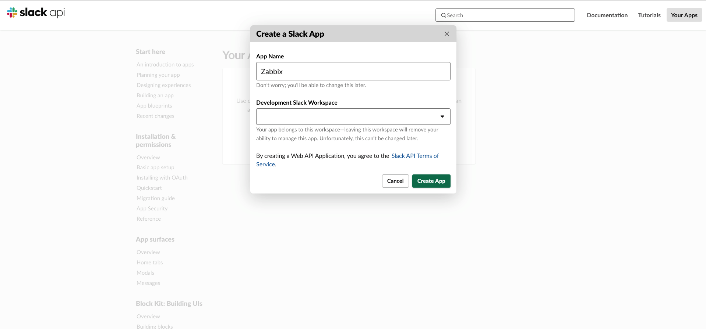

Monitoring
Zabbix
Slack Alerting
Configuring Slack
Go to https://api.slack.com/apps. Create a new app called “Zabbix”.
{kind=link}
Create an Incoming Webhook.


Copy the curl request to /usr/lib/zabbix/alertscripts/slackalerts.sh.

Change '{"text":"Hello, World!"}' to '{"text":"'"$1"'"}'.
Test your configuration on Zabbix with /usr/lib/zabbix/alertscripts/slackalerts.sh test.
Configuring Zabbix
Create the Media Type in Zabbix.

Create an Action and an Operation in Operations, Recovery operations, and Update operations.
Nice Default subjects to use:
Create {ZABBIX.SERVER} in Administration > General > Macros
[{ZABBIX.SERVER}] - [{HOST.HOST}] Problem: {EVENT.NAME}[{ZABBIX.SERVER}] - [{HOST.HOST}] Resolved: {EVENT.NAME}[{ZABBIX.SERVER}] - [{HOST.HOST}] Updated problem: {EVENT.NAME} - {USER.FULLNAME}
{kind=link}

Add the Media to the Administrator.

Nagios
Install Nagios Client on Ubuntu
https://tecadmin.net/how-to-install-nrpe-on-ubuntu-20-04/
apt update
apt install nagios-nrpe-server nagios-plugins
nano /etc/nagios/nrpe.cfg
allowed_hosts=127.0.0.1, 192.168.1.100
systemctl restart nagios-nrpe-server